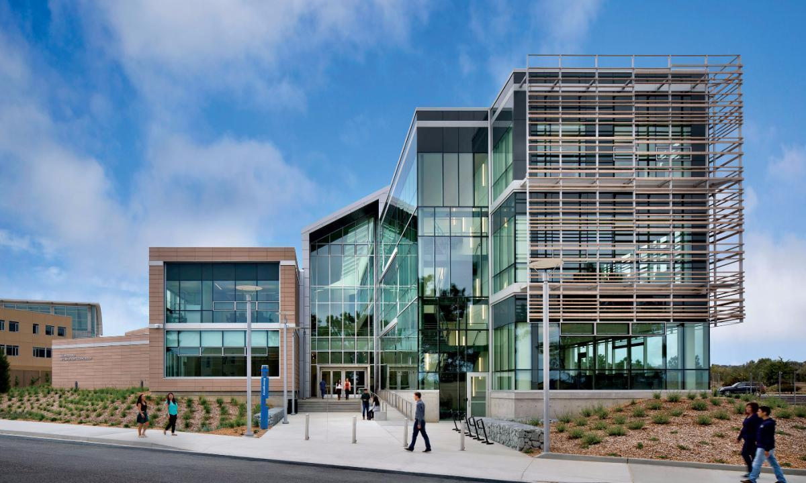

My name is Ashley James. Currently, I go to school full-time at California State University at Monterey Bay where I am finishing my Bachelor’s Degree in Business Administration with a concentration in Information Systems. Besides being a student, I work full time as a Registration Specialist and Compliance Officer for a small fertilizer company located in Paso Robles, CA and part-time at night for The Catalyst Club in Santa Cruz, CA. Previously I have worked in several industries that include, but are not limited to; Non-Profit Hippotherapy, Customer Service, Manufacturing, Retail Sales, Veterinary Medicine, Real Estate, Medical Records, Health and Human Services, and Entertainment. Besides work and school, I also enjoy a plethora of outdoor hobbies. I love horseback riding, hiking, camping, and traveling by car or trips by plane. I equally love the ocean and all the beautiful mysteries it holds, and the mountains that keep pristine lakes and evergreen forests. My favorite seasons of year are Spring and Fall because both boast bright colors and crisp, fragrant air. I grew up as the youngest, and only girl, in a family of three boys. My brothers are 36, 41, and 45 and are married with families. Besides them I also have a foster sister who has been my closest friend since we were both 11 years old. She is also married with children. Between the four of them I have seven nephews, and four nieces. I love being able to watch them grow, and spoil them in a way that only an aunt, can. My parents are still living in the beautiful foothills of El Dorado County in a house that I spent the last 16 years growing up in. I enjoy traveling to visit and stay with them as much as possible. Thank you for visiting my page and learning more about me. I hope you enjoy!

CSUMB BIT Building


I have a 25 year history of riding and training horses.
My contact information is as follows:
Email: asjames@csumb.edu
Phone: (530) 417-4611